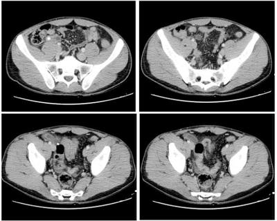
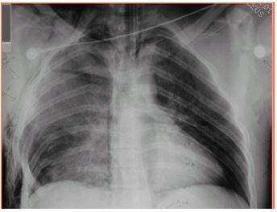

Questão 1 · Medicina Preventiva · Medidas de saúde coletiva · Epidemiologia · 4000141942A pandemia COVID-19 trouxe à tona uma série de conceitos epidemiológicos utilizados com o sentido de verificar a evolução histórica de doenças, a e cácia das diversas medidas preventivas e os riscos populacionais. Conceitos epidemiológicos foram amplamente debatidos nas várias mídias, incluindo as redes sociais. Indicadores menos conhecidos e modelos preditores matemáticos vêm sendo usados, obrigando todos os pro ssionais de saúde a se familiarizarem com eles. Conceitos como período de latência e indicadores, como probabilidade de transmissão e numero de reprodução (Rt), passaram a ser empregados amplamente. A taxa de ocupação de leitos de UTI tem sido utilizada como indicador da capacidade do sistema de saúde nesta pandemia COVID-19. O índice "Número de Reprodução de casos (R)” é determinado pelo número
A de casos novos acumulados e notificados durante a semana .
B médio de casos secundários determinados após exposição a um caso índice.
C de casos capazes de reproduzir a doença em uma comunidade (infectantes).
D de casos susceptíveis de uma comunidade que ainda não adquiriram a doença.
Questão 2 · Cadastro Nacional de Estabelecimentos de Saúde CNES · 4000141941A pandemia COVID-19 trouxe à tona uma série de conceitos epidemiológicos utilizados com o sentido de verificar a evolução histórica de doenças, a e cácia das diversas medidas preventivas e os riscos populacionais. Conceitos epidemiológicos foram amplamente debatidos nas várias mídias, incluindo as redes sociais. Indicadores menos conhecidos e modelos preditores matemáticos vêm sendo usados, obrigando todos os pro ssionais de saúde a se familiarizarem com eles. Conceitos como período de latência e indicadores, como probabilidade de transmissão e numero de reprodução (Rt), passaram a ser empregados amplamente. A taxa de ocupação de leitos de UTI tem sido utilizada como indicador da capacidade do sistema de saúde nesta pandemia COVID-19. A taxa de ocupação de leitos de UTI, por unidade de tempo e de local, utilizada no planejamento das ações é calculada usando, como denominador, os leitos de UTI representados pelos leitos registrados
A nos Planos de Contingência municipais.
B no Cadastro Nacional de Estabelecimentos de Saúde.
C na Agência Nacional de Saúde Suplementar.
D na Agência Nacional de Vigilância Sanitária.
Questão 3 · Medicina Preventiva · Epidemiologia · Aspectos Epidemiológicos das Doenças Transmissíveis · 4000141940A pandemia COVID-19 trouxe à tona uma série de conceitos epidemiológicos utilizados com o sentido de verificar a evolução histórica de doenças, a e cácia das diversas medidas preventivas e os riscos populacionais. Conceitos epidemiológicos foram amplamente debatidos nas várias mídias, incluindo as redes sociais. Indicadores menos conhecidos e modelos preditores matemáticos vêm sendo usados, obrigando todos os pro ssionais de saúde a se familiarizarem com eles. Conceitos como período de latência e indicadores, como probabilidade de transmissão e numero de reprodução (Rt), passaram a ser empregados amplamente. A taxa de ocupação de leitos de UTI tem sido utilizada como indicador da capacidade do sistema de saúde nesta pandemia COVID-19. Entende-se como período de latência da doença o período entre
A contrair o agente e se tornar infectado.
B contrair a doença e se tornar positivo em exame sorológico.
C contrair o agente e manifestar a doença.
D vacinar o paciente e obter imunidade.
Questão 4 · Abstinência de Álcool · Psiquiatria · 4000141939Situações de uso abusivo de álcool, gerando agravos de saúde, são comuns nas Unidades Básicas de Saúde. O pro ssional de saúde deve estar preparado para acolher esses pacientes, entendendo sua história, estrati cando o grau de dependência ao álcool e planejando, junto à equipe multipro ssional, o plano terapêutico singular. Na estrati cação do grau de dependência do álcool, a ferramenta “CAGE” é geralmente utilizada na entrevista, bem como o conceito de dose padrão. Para um paciente que tem dependência alcoólica grave e decide parar de beber para prevenir a síndrome de abstinência, o fármaco com via de administração que, necessariamente, deve estar incluído no plano terapêutico singular, é:
A Bupropiona.
B Tiamina.
C Buspirona.
D Carbamazepina.
Questão 5 · Dependência de Álcool · Psiquiatria · 4000141938Situações de uso abusivo de álcool, gerando agravos de saúde, são comuns nas Unidades Básicas de Saúde. O pro ssional de saúde deve estar preparado para acolher esses pacientes, entendendo sua história, estrati cando o grau de dependência ao álcool e planejando, junto à equipe multipro ssional, o plano terapêutico singular. Na estrati cação do grau de dependência do álcool, a ferramenta “CAGE” é geralmente utilizada na entrevista, bem como o conceito de dose padrão. Entende-se por dose-padrão, na investigação do consumo de álcool, a quantidade de etanol puro
A consumido por dose independente do tipo de bebida.
B capaz de provocar lesão histológica, com especificação por órgão.
C capaz de promover efeitos no Sistema Nervoso Central.
D capaz de ser detectada em exames como o do “bafômetro".
Questão 6 · Dependência de Álcool · Psiquiatria · 4000141937Situações de uso abusivo de álcool, gerando agravos de saúde, são comuns nas Unidades Básicas de Saúde. O pro ssional de saúde deve estar preparado para acolher esses pacientes, entendendo sua história, estrati cando o grau de dependência ao álcool e planejando, junto à equipe multipro ssional, o plano terapêutico singular. Na estrati cação do grau de dependência do álcool, a ferramenta “CAGE” é geralmente utilizada na entrevista, bem como o conceito de dose padrão. No mnemônico CAGE, o G. identifica que
A O paciente acorda de manhã com necessidade de beber.
B O paciente entende que precisa parar de beber.
C O paciente se sente culpado por beber.
D O paciente já tentou parar de beber.
Questão 7 · Cadastro Nacional de Estabelecimentos de Saúde CNES · 4000141936Princípios bioéticos f undamentais ou principialistas ou principialismo Beauchamp e Childress Embora presente no Brasil há cerca de 20 anos, as discussões sobre Telessaúde e Telemedicina ganharam mais atenção após a Resolução 2227/2018 do CFM, que dispunha sobre Telemedicina e Teleconsulta. Essa portaria, após inúmeras críticas, foi revogada. Em 2020, diante do cenário da COVID-19, o Ministério da Saúde lança a Portaria 467 em 20 de março de 2020. Considerando o teor da Portaria 467 de 20 de Março de 2020 Indique o principal procedimento usado na teleconsulta para asssegurar o cumprimento do princípio ético da autonomia do paciente.
A Possibilidade de gravação da consulta.
B Uso de Termo de Consentimento Livre e Esclarecido – TCLE.
C Utilização de ambiente digital criptografado.
D Emissão de relatório final de consulta para o paciente.
Questão 8 · Telessaúde · 4000141935Embora presente no Brasil há cerca de 20 anos, as discussões sobre Telessaúde e Telemedicina ganharam mais atenção após a Resolução 2227/2018 do CFM, que dispunha sobre Telemedicina e Teleconsulta. Essa portaria, após inúmeras críticas, foi revogada. Em 2020, diante do cenário da COVID-19, o Ministério da Saúde lança a Portaria 467 em 20 de março de 2020. Considerando o teor da Portaria 467 de 20 de Março de 2020 Indique a exigência fundamental para a prescrição médica de receitas e emissão de atestados por meio digital.
A Possuir cadastramento prévio especial no CFM.
B Usar o modelo de impresso apropriado, fornecido pelo Ministério da Saúde
C Ter assinatura digital registrada em cartório público de notas.
D Ter assinatura eletrônica devidamente registrada no ICP Brasil.
Questão 9 · Telessaúde · 4000141934Embora presente no Brasil há cerca de 20 anos, as discussões sobre Telessaúde e Telemedicina ganharam mais atenção após a Resolução 2227/2018 do CFM, que dispunha sobre Telemedicina e Teleconsulta. Essa portaria, após inúmeras críticas, foi revogada. Em 2020, diante do cenário da COVID-19, o Ministério da Saúde lança a Portaria 467 em 20 de março de 2020. Considerando o teor da Portaria 467 de 20 de Março de 2020 É correto afirmar que em relação à situação legal, o exercício da teleconsulta encontra-se:
A Autorizado integralmente dentro das regras do CFM.
B Autorizado em caráter excepcional, enquanto durar a pandemia.
C Autorizado em caráter experimental, com redefinição de regras.
D Liberado apenas em condições especiais de inacessibilidade dos pacientes.
Questão 10 · Vigilância Sanitária · 4000141933A incerteza no tratamento da COVID-19 gerou inúmeros trabalhos cientí cos e protocolos. Temos assistido muitas controvérsias quanto ao uso criterioso de medicações para tratamento e caz. As bases cientí cas prevêem princípios da Epidemiologia Clínica para a seleção de fármacos e de protocolos de tratamento. Quando recomendamos o uso compassivo de um fármaco, estamos nos referindo à utilização de fármaco:
A Sem potencial de cura, para melhorar a qualidade de vida.
B Em protocolo de pesquisa, sem liberação comercial, na inexistência de outro tratamento.
C Em pacientes graves, sem liberação comercial, na inexistência de outro tratamento.
D Liberado para uso em outras doenças graves, na inexistência de tratamento testado.
Revisar: possível letra faltando em enunciado
Questão 11 · Tipos de Desf echo · 4000141932A incerteza no tratamento da COVID-19 gerou inúmeros trabalhos cientí cos e protocolos. Temos assistido muitas controvérsias quanto ao uso criterioso de medicações para tratamento e caz. As bases cientí cas prevêem princípios da Epidemiologia Clínica para a seleção de fármacos e de protocolos de tratamento. É correto afirmar que o desfecho primário de uma pesquisa clínica pode ser definido por:
A Uma variável que responde à pergunta da pesquisa.
B Conclusões da pesquisa a serem descritas na publicação.
C Finalização precoce da pesquisa devido a resultados insatisfatorios.
D Finalização precoce da pesquisa por resultados excepcionalmente bons.
Revisar: possível letra faltando em enunciado
Questão 12 · Ensaios clínicos duplocegos randomizados · Ensaios clínicos · 4000141931A incerteza no tratamento da COVID-19 gerou inúmeros trabalhos cientí cos e protocolos. Temos assistido muitas controvérsias quanto ao uso criterioso de medicações para tratamento e caz. As bases cientí cas prevêem princípios da Epidemiologia Clínica para a seleção de fármacos e de protocolos de tratamento. Indique o modelo de estudo (desenho metodológico) mais adequado para conhecer a e cácia de uma droga nova no tratamento de uma doença, imediatamente após ultrapassada a fase de segurança.
A Ensaio clinico prospectivo, duplo cego randomizado e controlado.
B Estudo de Coorte histórico e multicêntrico.
C Metanálise retrospectiva dos estudos clínicos de segurança.
D Estudo de Coorte transversal com amostra populacional.
Revisar: possível letra faltando em enunciado
Questão 13 · Lei 10216 de 6 de abril de 2001 Lei Antimanicomial · Ref orma Psiquiátrica Brasileira · 4000141930Estaremos comemorando 20 anos da aprovac aspectos da Reforma Psiquiátrica, a qual produziu uma se essas ações constam: ”a abertura de um grande nu nu ́ mero de leitos psiquia atenc (Gama, J. A Reforma Psiquiátrica e seus criticos. Physis Revista de Sau A principal crítica formulada ao modelo de reforma psiquiátrica aplicado no Brasil, expressa nos diversos documentos da Associação Brasileira de Psiquiatria, advém de considerar que
A Os CAPS deveriam ser multiplicados pois são inteiramente adequados ao tratamento .
B O SUS não tem qualidade suficiente para o atendimento adequado dos pacientes.
C A Atenção Básica a Saúde não consegue resolver os transtornos mentais comuns.
D Há desvalorização do cuidado especializado em situações mais graves e emergenciais.
Questão 14 · Lei 10216 de 6 de abril de 2001 Lei Antimanicomial · Ref orma Psiquiátrica Brasileira · 4000141929Estaremos comemorando 20 anos da aprovac aspectos da Reforma Psiquiátrica, a qual produziu uma se essas ações constam: ”a abertura de um grande nu nu ́ mero de leitos psiquia atenc (Gama, J. A Reforma Psiquiátrica e seus criticos. Physis Revista de Sau A principal característica do modelo físico-reducionista da saúde, aplicada à saúde mental, pode ser descrita como:
A A busca de equivalentes estruturais neuronais para os fenômenos psíquicos.
B A crença nas intervenções físicas (exemplo: eletrochoque) como modelos de tratamento.
C A redução dos diagnósticos psiquiátricos àqueles codificados no CID 11.
D A consideração dos fenômenos mentais como efeitos das condições sociais.
Questão 15 · Ref orma Psiquiátrica Brasileira · 4000141928Estaremos comemorando 20 anos da aprovac aspectos da Reforma Psiquiátrica, a qual produziu uma se essas ações constam: ”a abertura de um grande nu nu ́ mero de leitos psiquia atenc (Gama, J. A Reforma Psiquiátrica e seus criticos. Physis Revista de Sau Com relação ao internamento pelo SUS de pacientes psiquiátricos em crise, no momento atual, pela proposta da Reforma Psiquiátrica pode - se dizer que as necessidades de internamento devem ser direcionadas:
A Aos Centros de Atenção Psicossocial(CAPS), do Tipo III.
B Aos Manicômios especializados credenciados.
C Aos CAPS, Tipo III, Hospitais gerais e especializados.
D Aos Hospitais gerais sem especialização.
Questão 16 · Reanimação neonatal · Pediatria · Reanimação neonatal em maiores de 34 semanas · 4000141927Menino, nascido de parto cirúrgico indicado por suspeita de descolamento prematuro da placenta, é assistido na sala de parto. A idade gestacional, aproximada, é de 37 semanas. A criança é entregue ao pediatra, logo após o clampeamento do cordão umbilical. Ao primeiro minuto de vida, o bebê apresenta choro fraco, atitude etida, movimenta-se sem muito vigor; está rosado e com a frequência cardíaca de 106 bpm. Identifique os parâmetros que devem ser considerados para avaliar a vitalidade do recém-nascido.
A Choro e Frequência respiratória.
B Choro e Movimentos voluntários.
C Frequência cardíaca e Frequência respiratória.
D Frequência cardíaca e Movimentos voluntários.
Questão 17 · Reanimação neonatal · Pediatria · Reanimação neonatal em maiores de 34 semanas · 4000141926Menino, nascido de parto cirúrgico indicado por suspeita de descolamento prematuro da placenta, é assistido na sala de parto. A idade gestacional, aproximada, é de 37 semanas. A criança é entregue ao pediatra, logo após o clampeamento do cordão umbilical. Ao primeiro minuto de vida, o bebê apresenta choro fraco, atitude etida, movimenta-se sem muito vigor; está rosado e com a frequência cardíaca de 106 bpm. Identi que a alternativa que informa a ordem correta de execução dos procedimentos que compõem a assistência a essa criança.
A Posicionar a criança com a cabeça mais baixa do que o corpo; envolvê-la em campos estéreis e secá-la; aspirar secreções de naso e orofaringe.
B Posicionar a criança com a cabeça mais baixa do que o corpo; aspirar secreções de naso e orofaringe; envolvê- la em campos estéreis e secá-la.
C Envolver o recém-nascido em campos estéreis e secá-lo; posicioná-lo com a cabeça mais baixa do que o corpo; aspirar secreções de naso e orofaringe.
D Envolver o recém-nascido em campos estéreis e secá-lo; aspirar secreções de naso e orofaringe; posicioná-lo com a cabeça mais baixa do que o corpo.
Questão 18 · Exame f ísico do Recémnascido · Recepção do neonato com boa vitalidade · 4000141925Menino, nascido de parto cirúrgico indicado por suspeita de descolamento prematuro da placenta, é assistido na sala de parto. A idade gestacional, aproximada, é de 37 semanas. A criança é entregue ao pediatra, logo após o clampeamento do cordão umbilical. Ao primeiro minuto de vida, o bebê apresenta choro fraco, atitude etida, movimenta-se sem muito vigor; está rosado e com a frequência cardíaca de 106 bpm. Indique o indice Apgar dessa criança no primeiro minuto de vida.
A 4
B 5
C 6
D 8
Questão 19 · Glomeruloesclerose f ocal e segmentar · Nef rologia Pediátrica · 4000141924A enfermaria de Pediatria, de um hospital de referência, recebe uma menina de 5 anos de idade com história de edema periorbitário há, aproximadamente, 3 dias, e que, agora, atinge abdomen e membros inferiores. A genitora relata 3 a 4 dejeções ao dia, com fezes amolecidas, e que a urina está espumosa. Sem antecedentes patológicos, refere ser alérgica a picada de insetos. Ao exame, T.: 36.4oC.; FC: 92bpm; FR: 24ipm; PA: 95x65mmHg. O estado geral é regular. Pele sem alterações à inspeção; mucosas coradas; edema bipalpebral bilateral. Abdomen globoso, referindo desconforto que impede a palpação profunda; edema em membros inferiores. Demais dados do exame segmentar sem alterações. Aguarda-se os resultados dos exames laboratoriais. Diante do relato e dos dados apresentados, Indique, dentro dos dados clínicos apresentados, aquele que, se presente, indica biópsia do órgão sede da lesão, em casos semelhantes ao descrito.
A Idade inferior a 1 ano.
B Hematúria microscópica.
C Elevação do Complemento.
D Elevação de Triglicérides e de Colesterol.
Questão 20 · Glomeruloesclerose f ocal e segmentar · 4000141923A enfermaria de Pediatria, de um hospital de referência, recebe uma menina de 5 anos de idade com história de edema periorbitário há, aproximadamente, 3 dias, e que, agora, atinge abdomen e membros inferiores. A genitora relata 3 a 4 dejeções ao dia, com fezes amolecidas, e que a urina está espumosa. Sem antecedentes patológicos, refere ser alérgica a picada de insetos. Ao exame, T.: 36.4oC.; FC: 92bpm; FR: 24ipm; PA: 95x65mmHg. O estado geral é regular. Pele sem alterações à inspeção; mucosas coradas; edema bipalpebral bilateral. Abdomen globoso, referindo desconforto que impede a palpação profunda; edema em membros inferiores. Demais dados do exame segmentar sem alterações. Aguarda-se os resultados dos exames laboratoriais. Diante do relato e dos dados apresentados, Considerando os níveis máximos de albumina sérica, para reforçar a suspeita diagnóstica mais provável, é esperado que estejam abaixo de:
A 5,0g/dL
B 4,5g/dL
C 3,5g/dL
D 2,5 g/dL
Questão 21 · Síndrome nef rótica · Nef rologia Pediátrica · 4000141922A enfermaria de Pediatria, de um hospital de referência, recebe uma menina de 5 anos de idade com história de edema periorbitário há, aproximadamente, 3 dias, e que, agora, atinge abdomen e membros inferiores. A genitora relata 3 a 4 dejeções ao dia, com fezes amolecidas, e que a urina está espumosa. Sem antecedentes patológicos, refere ser alérgica a picada de insetos. Ao exame, T.: 36.4oC.; FC: 92bpm; FR: 24ipm; PA: 95x65mmHg. O estado geral é regular. Pele sem alterações à inspeção; mucosas coradas; edema bipalpebral bilateral. Abdomen globoso, referindo desconforto que impede a palpação profunda; edema em membros inferiores. Demais dados do exame segmentar sem alterações. Aguarda-se os resultados dos exames laboratoriais. Diante do relato e dos dados apresentados, Indique o valor esperado para a proteinúria de 24 horas, para ns de confirmação do diagnóstico principal provável, nesse caso.
A Acima de 30 mg/Kg/dia.
B Acima de 40 mg/Kg/dia.
C Acima de 50 mg/Kg/dia.
D Acima de 60 mg/Kg/dia.
Questão 22 · Fisiopatologia da anemia f alcif orme · 4000141921Menina, 8 anos de idade, negra, encaminhada para avaliação no ambulatório de referência com história de anemia crônica. A acompanhante (tia) relata que a menor queixa-se de cansaço fácil e dor em membros inferiores, frequentemente. Refere anorexia. Não sabe informar sobre quadro semelhante em familiares. Ao exame está em regular estado geral, ativa, hidratada, eupnéica, afebril, sem alterações em dados vitais; Peso: 24Kg; com mucosas descoradas ++/IV. Não há adenomegalias. A ausculta cardíaca apresenta sopro holossistólico II/VI, audível em focos da base. Ausculta respiratória e restante do exame segmentar sem alterações. Exames realizados há 45 dias: hematócrito: 24,6% e hemoglobina: 8,2g/dL. Indique o momento a partir do qual o exame específico pode ser realizado para o diagnóstico definitivo da causa da anemia em foco.
A Desde o nascimento.
B Após o período neonata.l
C Após o primeiro ano de vida.
D A partir de 3 meses de idade.
Questão 23 · Quadro clínico da anemia f alcif orme · 4000141920Menina, 8 anos de idade, negra, encaminhada para avaliação no ambulatório de referência com história de anemia crônica. A acompanhante (tia) relata que a menor queixa-se de cansaço fácil e dor em membros inferiores, frequentemente. Refere anorexia. Não sabe informar sobre quadro semelhante em familiares. Ao exame está em regular estado geral, ativa, hidratada, eupnéica, afebril, sem alterações em dados vitais; Peso: 24Kg; com mucosas descoradas ++/IV. Não há adenomegalias. A ausculta cardíaca apresenta sopro holossistólico II/VI, audível em focos da base. Ausculta respiratória e restante do exame segmentar sem alterações. Exames realizados há 45 dias: hematócrito: 24,6% e hemoglobina: 8,2g/dL. Indique o achado, no esfregaço de sangue periférico, que permitiria fechar o diagnóstico etiológico (e patognomônico) desse tipo de anemia.
A Ovalócitos.
B Esferócitos.
C Drepanócitos.
D Hemáceas em alvo.
Questão 24 · Quadro clínico da anemia f alcif orme · 4000141919Menina, 8 anos de idade, negra, encaminhada para avaliação no ambulatório de referência com história de anemia crônica. A acompanhante (tia) relata que a menor queixa-se de cansaço fácil e dor em membros inferiores, frequentemente. Refere anorexia. Não sabe informar sobre quadro semelhante em familiares. Ao exame está em regular estado geral, ativa, hidratada, eupnéica, afebril, sem alterações em dados vitais; Peso: 24Kg; com mucosas descoradas ++/IV. Não há adenomegalias. A ausculta cardíaca apresenta sopro holossistólico II/VI, audível em focos da base. Ausculta respiratória e restante do exame segmentar sem alterações. Exames realizados há 45 dias: hematócrito: 24,6% e hemoglobina: 8,2g/dL. Indique o parâmetro que aponta a presença de anisocitose no hemograma, nesse caso.
A RDW.
B VCM.
C HCM.
D Contagem de reticulócitos.
Questão 25 · PneumoniasBroncopneumonias BCP na Inf ância · 4000141918Menina, 8 anos de idade, é trazida ao Pronto Atendimento com dispneia e dor ventilatória dependente há 4 dias. Há dois dias vem cursando com febre alta (não aferida) associada a calafrios e tosse produtiva. A radiogra a de tórax mostra derrame pleural à direita. Indique o procedimento a ser realizado tendo emvista que, após uma semana de tratamento convencional adequado, não houve melhora do quadro clínico, o exame físico permanece o mesmo e a ultrassonografia de tórax revela septações.
A Toracocentese.
B Pleurostomia.
C Pleurodese.
D Drenagem torácica em selo d’água.
Questão 26 · Complicações · Pediatria · PneumoniasBroncopneumonias BCP na Inf ância · 4000141917Menina, 8 anos de idade, é trazida ao Pronto Atendimento com dispneia e dor ventilatória dependente há 4 dias. Há dois dias vem cursando com febre alta (não aferida) associada a calafrios e tosse produtiva. A radiogra a de tórax mostra derrame pleural à direita. Identifique os sinais clínicos de maior acurácia ao exame de tórax para o diagnóstico de derrame pleural.
A Frêmito pleural e abolição de murmúrios vesiculares.
B Macicez ou submacicez e assimetria na expansibilidade torácica.
C Redução do frêmito tóracovocal e assimetria na expansibilidade.
D Aumento do timpanismo à percussão e assimetria na expansibilidade.
Questão 27 · Agentes etiológicos · Pediatria · PneumoniasBroncopneumonias BCP na Inf ância · 4000141916Menina, 8 anos de idade, é trazida ao Pronto Atendimento com dispneia e dor ventilatória dependente há 4 dias. Há dois dias vem cursando com febre alta (não aferida) associada a calafrios e tosse produtiva. A radiogra a de tórax mostra derrame pleural à direita. Indique o agente etiológico mais provável, considerando os aspectos clínicos, epidemiológicos e radiológicos.
A Moraxella catarrhalis.
B Haemophilus influenzae.
C Staphyloccoccus aureus.
D Streptococcus Pneumoniae.
Questão 28 · Tétano · 4000141915Menino, 7 anos de idade, é levado à Unidade de Pronto Atendimento por ter pisado em um prego enferrujado quando se encontrava em um abrigo de animais. O genitor não conseguiu retirar o prego, que permaneceu encravado. Sua carteira de vacinação mostra-se desatualizada desde os 12 meses de idade. Considerando a situação descrita, Quanto à antibioticoterapia profilática é correto afirmar:
A Não há evidências científicas para a profilaxia com penicilina benzatina.
B A clindamicina e a doxiciclina estão contraindicadas no caso.
C A reação cruzada com penicilinas é maior nas cefalosporinas de 3a geração.
D Metronidazol não substitui penicilina em casos de tétano já instalado.
Questão 29 · Família DTP · dT Dupla bacteriana adulta · Pediatria · 4000141914Menino, 7 anos de idade, é levado à Unidade de Pronto Atendimento por ter pisado em um prego enferrujado quando se encontrava em um abrigo de animais. O genitor não conseguiu retirar o prego, que permaneceu encravado. Sua carteira de vacinação mostra-se desatualizada desde os 12 meses de idade. Considerando a situação descrita, Indique a estratégia de imunização correta para profilaxia de tétano, nesse caso.
A Usar vacina dupla (DT).
B Usar vacina tríplice (DPT).
C Usar vacina toxoide tetânico e imunoglobulina hiperimune antitetânica.
D Usar vacina dupla (DT) e imunoglobulina hiperimune antitetânica.
Questão 30 · Medicina Preventiva · Prevenção do tétano acidental · 4000141913Menino, 7 anos de idade, é levado à Unidade de Pronto Atendimento por ter pisado em um prego enferrujado quando se encontrava em um abrigo de animais. O genitor não conseguiu retirar o prego, que permaneceu encravado. Sua carteira de vacinação mostra-se desatualizada desde os 12 meses de idade. Considerando a situação descrita, Identifique a afirmação correta quanto aos cuidados desse paciente.
A O uso de água oxigenada não evidencia vantagens sobre a lavagem com soro fisiológico comum.
B A lavagem com clorexedina não mostrou eficácia no combate à infecção local.
C O desbridamento pode ser evitado, se a retirada do prego ocorrer antes de duas horas do ferimento ter ocorrido.
D O curativo oclusivo pós-desbridamento está contraindicado, devendo ser feito um curativo permeável .
Questão 31 · Fatores de proteção · Fatores de risco · 4000141912Mulher branca, 60 anos de idade, desde os 45 anos de idade entrou na menopausa. A primeira menstruação ocorreu aos 9 anos. Teve 3 gestações e todas evoluíram para parto normal. Refere hipertensão bem controlada com medicação. IMC: 30Kg/m². Vem ao pronto atendimento pois apresentou sangramento vaginal, de pouca quantidade, há 3 dias, com melhora espontânea após 2 dias do início do evento. Hoje apresenta sangramento tipo borra de café. Nega cólica ou outros sintomas associados. Nega uso de medicações no momento ou histórico de reposição hormonal. Ao exame físico: corada e hidratada. Abdome ácido, indolor à palpação e sem visceromegalias. Exame especular: presença de sangramento não ativo de pouca quantidade coletado em fundo vaginal. TV: ausência de dor à mobilização do colo uterino. Ultrassonogra a Transvaginal realizada evidencia útero em retroverso exão com dimensões, morfologia e contornos preservados. Medida total: 40cm³, miométrio com ecotextura homogênea, eco endometrial centrado homogêneo de 6mm. Ovários não visualizados. Ausência de líquido livre na cavidade. São fatores de risco para câncer de endométrio nessa paciente, exceto:
A Apresentar IMC: 30Kg/m².
B Ter tido menarca aos 9 anos.
C Ter tido três gestações.
D Ser hipertensa.
Questão 32 · Câncer de Endométrio · 4000141911Mulher branca, 60 anos de idade, desde os 45 anos de idade entrou na menopausa. A primeira menstruação ocorreu aos 9 anos. Teve 3 gestações e todas evoluíram para parto normal. Refere hipertensão bem controlada com medicação. IMC: 30Kg/m². Vem ao pronto atendimento pois apresentou sangramento vaginal, de pouca quantidade, há 3 dias, com melhora espontânea após 2 dias do início do evento. Hoje apresenta sangramento tipo borra de café. Nega cólica ou outros sintomas associados. Nega uso de medicações no momento ou histórico de reposição hormonal. Ao exame físico: corada e hidratada. Abdome ácido, indolor à palpação e sem visceromegalias. Exame especular: presença de sangramento não ativo de pouca quantidade coletado em fundo vaginal. TV: ausência de dor à mobilização do colo uterino. Ultrassonogra a Transvaginal realizada evidencia útero em retroverso exão com dimensões, morfologia e contornos preservados. Medida total: 40cm³, miométrio com ecotextura homogênea, eco endometrial centrado homogêneo de 6mm. Ovários não visualizados. Ausência de líquido livre na cavidade. Diante do resultado da ultrassonografia transvaginal é correto afirmar:
A A ultrassonografia transvaginal está normal e a conduta deve ser expectante.
B A paciente deverá ser submetida à histeroscopia com biópsia endometrial, mesmo com a ultrassonografia sem alterações.
C A ultrassonografia evidencia um endométrio espessado e a conduta deverá ser realização de biópsia endometrial.
D A ultrassonografia transvaginal está normal e, provavelmente, a paciente apresenta um sangramento uterino anormal de causa ovariana e devem ser solicitados exames laboratoriais para melhor avaliação.
Questão 33 · Endometrial · 4000141910Mulher branca, 60 anos de idade, desde os 45 anos de idade entrou na menopausa. A primeira menstruação ocorreu aos 9 anos. Teve 3 gestações e todas evoluíram para parto normal. Refere hipertensão bem controlada com medicação. IMC: 30Kg/m². Vem ao pronto atendimento pois apresentou sangramento vaginal, de pouca quantidade, há 3 dias, com melhora espontânea após 2 dias do início do evento. Hoje apresenta sangramento tipo borra de café. Nega cólica ou outros sintomas associados. Nega uso de medicações no momento ou histórico de reposição hormonal. Ao exame físico: corada e hidratada. Abdome ácido, indolor à palpação e sem visceromegalias. Exame especular: presença de sangramento não ativo de pouca quantidade coletado em fundo vaginal. TV: ausência de dor à mobilização do colo uterino. Ultrassonogra a Transvaginal realizada evidencia útero em retroverso exão com dimensões, morfologia e contornos preservados. Medida total: 40cm³, miométrio com ecotextura homogênea, eco endometrial centrado homogêneo de 6mm. Ovários não visualizados. Ausência de líquido livre na cavidade. Identifique a causa mais frequente de sangramento pós menopausa:
A Pólipo endometrial.
B Mioma submucoso.
C Câncer de endométrio.
D Atrofia endometrial.
Questão 34 · Aborto legal no Brasil · Legislação sobre aborto · Código de Ética Médica CEM · 4000141909Menina, 12 anos de idade, vem ao pronto atendimento com dor abdominal tipo cólica e náuseas. Questionada sobre ciclo menstrual, informa que menstruou pela primeira vez há 6 meses e que nos últimos 4 meses o ciclo estava regular a cada 28 dias, exceto este mês que está atrasada há 15 dias. Ao ser novamente questionada sobre sua vida sexual, refere sofrer violência sexual de seu vizinho de 25 anos de idade, há 2 anos, e que o mesmo a ameaça para que não conte para os pais. Último episódio de violência sexual ocorreu há cerca de 4 semanas e o penúltimo há 3 meses. Nega que ele utilize condom. Entre os exames solicitados, o beta HCG está positivo. A ultrassonogra a, de hoje, evidencia gestação tópica única, com embrião presente compatível com gestação de 6 semanas, BCF: 128bpm. Todas as providências legais e médicas cabíveis foram tomadas e houve conversa com os pais da paciente que estão chorosos, assim como a paciente, pois não desejam a gestação Sobre o abortamento no Brasil, em caso de confirmação de gestação ocasionada por violência sexual,é correto afirmar:
A Pode ser realizado em qualquer momento da gestação, visto ser um direito da mulher que sofreu a violência sexual.
B Não é legalizado no Brasil.
C Pode ser realizado por profissional médico capacitado, de forma legalizada, desde que seja apresentado um boletim de ocorrência informando sobre a violência sexual.
D Pode ser realizado até 20ª ou 22ª semana, ou quando o feto pese até 500 gramas, e não necessita de boletim de ocorrência.
Questão 35 · Atendimento · 4000141908Menina, 12 anos de idade, vem ao pronto atendimento com dor abdominal tipo cólica e náuseas. Questionada sobre ciclo menstrual, informa que menstruou pela primeira vez há 6 meses e que nos últimos 4 meses o ciclo estava regular a cada 28 dias, exceto este mês que está atrasada há 15 dias. Ao ser novamente questionada sobre sua vida sexual, refere sofrer violência sexual de seu vizinho de 25 anos de idade, há 2 anos, e que o mesmo a ameaça para que não conte para os pais. Último episódio de violência sexual ocorreu há cerca de 4 semanas e o penúltimo há 3 meses. Nega que ele utilize condom. Entre os exames solicitados, o beta HCG está positivo. A ultrassonogra a, de hoje, evidencia gestação tópica única, com embrião presente compatível com gestação de 6 semanas, BCF: 128bpm. Todas as providências legais e médicas cabíveis foram tomadas e houve conversa com os pais da paciente que estão chorosos, assim como a paciente, pois não desejam a gestação Considerando a violência sexual, nesse caso, é correto afirmar:
A Não deve ser realizada profilaxia para prevenção de ISTs nesse momento.
B É necessário prescrição de profilaxia para prevenção de HIV, sífilis, hepatite B, clamídia e gonococo no momento.
C A profilaxia para prevenção de HIV já não pode ser mais ser realizada pelo tempo de ocorrência do evento, mas é possível a profilaxia de sífilis, hepatite B, clamídia e gonococo.
D A profilaxia para prevenção de HIV e Hepatite B já não pode ser mais ser realizada pelo tempo de ocorrência do evento, mas é possível a profilaxia de sífilis, clamídia e gonococo.
Questão 36 · Aborto legal no Brasil · 4000141907Menina, 12 anos de idade, vem ao pronto atendimento com dor abdominal tipo cólica e náuseas. Questionada sobre ciclo menstrual, informa que menstruou pela primeira vez há 6 meses e que nos últimos 4 meses o ciclo estava regular a cada 28 dias, exceto este mês que está atrasada há 15 dias. Ao ser novamente questionada sobre sua vida sexual, refere sofrer violência sexual de seu vizinho de 25 anos de idade, há 2 anos, e que o mesmo a ameaça para que não conte para os pais. Último episódio de violência sexual ocorreu há cerca de 4 semanas e o penúltimo há 3 meses. Nega que ele utilize condom. Entre os exames solicitados, o beta HCG está positivo. A ultrassonogra a, de hoje, evidencia gestação tópica única, com embrião presente compatível com gestação de 6 semanas, BCF: 128bpm. Todas as providências legais e médicas cabíveis foram tomadas e houve conversa com os pais da paciente que estão chorosos, assim como a paciente, pois não desejam a gestação Com base nos dados do caso, sobre o período da última violência sexual, é correto afirmar:
A não está compatível com a idade gestacional, visto que a gestação está com duração provável de 6 semanas e a violência ocorreu há 4 semanas.
B está compatível com a idade gestacional e o abortamento legal, nesse caso, é permitido se for o desejo da paciente e de seus pais.
C está compatível com a idade gestacional, porém o abortamento legal, nesse caso, não é permitido já que trata-se de paciente menor que 18 anos.
D não está compatível com a idade gestacional, sendo necessária uma avaliação pelo Instituto Médico Legal para decidir o que deve ser feito.
Questão 37 · Ginecologia · Síndrome dos ovários policísticos · 4000141906Mulher, 25 anos de idade, não menstrua há 9 meses. Refere que sempre teve o ciclo irregular, atrasando às vezes mais de 40 dias, mas nos últimos meses não tem menstruado. Vem notando maior oleosidade na pele, com acne, e surgimento de pêlos grossos no abdome. Refere que ganhou cerca de sete quilos no último ano, pois vem comendo muito carboidrato e parou de fazer atividade física. IMC: 30Kg/m². Está tentando engravidar há 1 ano, sem sucesso. Pelo atraso menstrual sempre faz teste de gravidez, porém o resultado é sempre negativo. Identifique, nesse caso, o exame que pode auxiliar no diagnóstico diferencial.
A Dosagem de SHBG.
B Curva de esti
C Dosagem de progesterona.
D Dosagem de 17-hidroxiprogesterona (17OHP).
Questão 38 · Síndrome dos ovários policísticos · 4000141905Mulher, 25 anos de idade, não menstrua há 9 meses. Refere que sempre teve o ciclo irregular, atrasando às vezes mais de 40 dias, mas nos últimos meses não tem menstruado. Vem notando maior oleosidade na pele, com acne, e surgimento de pêlos grossos no abdome. Refere que ganhou cerca de sete quilos no último ano, pois vem comendo muito carboidrato e parou de fazer atividade física. IMC: 30Kg/m². Está tentando engravidar há 1 ano, sem sucesso. Pelo atraso menstrual sempre faz teste de gravidez, porém o resultado é sempre negativo. Diante da principal suspeita diagnóstica, indique os resultados esperados dos exames laboratoriais.
A É esperado um aumento dos níveis de FSH e queda dos níveis de LH, gerando uma proporção > 2.
B É esperado um aumento dos níveis de LH e queda dos níveis de FSH, gerando uma proporção > 2.
C Nesses casos, normalmente o LH e FSH estão em níveis semelhantes e elevados.
D Nesses casos, normalmente o LH e FSH estão em níveis semelhantes e suprimidos.
Questão 39 · Síndrome dos ovários policísticos · 4000141904Mulher, 25 anos de idade, não menstrua há 9 meses. Refere que sempre teve o ciclo irregular, atrasando às vezes mais de 40 dias, mas nos últimos meses não tem menstruado. Vem notando maior oleosidade na pele, com acne, e surgimento de pêlos grossos no abdome. Refere que ganhou cerca de sete quilos no último ano, pois vem comendo muito carboidrato e parou de fazer atividade física. IMC: 30Kg/m². Está tentando engravidar há 1 ano, sem sucesso. Pelo atraso menstrual sempre faz teste de gravidez, porém o resultado é sempre negativo. Diante do relato do caso é correto afirmar:
A A medicação mais indicada nesse momento é a metformina associada à espironolactona.
B A primeira opção terapêutica é a modificação de estilo de vida com perda ponderal e atividade física.
C Como a paciente já está tentando engravidar há 1 ano, sem sucesso, a primeira opção terapêutica é metformina e citrato de clomifeno para induzir a ovulação.
D O tratamento mais adequado, nesse momento, é a administração de estradiol por 10 dias para induzir uma menstruação.
Questão 40 · Inibição da amamentação · Obstetrícia · 4000141903Mulher, 34 anos de idade, gestante de 36 semanas e 2 dias, secundigesta e primípara (parto vaginal há 10 anos, fruto de outro relacionamento), está realizando pré-natal em maternidade de alto risco por ser paciente HIV positiva. Vem em consulta de pré-natal para trazer resultado de carga viral que realizou com 34 semanas e 2 dias: 1.050 cópias/mL. Carga viral com 30 semanas era de 2.000 cópias/mL. Está assintomática, referindo boa movimentação fetal. Ao exame físico: corada e hidratada, altura uterina: 35cm, BCF: 144bpm em QIE, tônus uterino preservado, dinâmica uterina ausente. Sobre a amamentação, nesse caso, é correto afirmar.
A Caso, após o parto, a carga viral esteja indetectável a amamentação poderá ser liberada.
B A amamentação está contraindicada e uma medicação utilizada para inibição da lactação é o agonista de GnRH.
C A amamentação está contraindicada e uma medicação utilizada para inibição da lactação é a cabergolina
D Caso, após o parto, a carga viral esteja indetectável e a paciente esteja em uso adequado da terapia antirretroviral (TARV), a amamentação poderá ser liberada.
Questão 41 · Parto · Obstetrícia · 4000141902Mulher, 34 anos de idade, gestante de 36 semanas e 2 dias, secundigesta e primípara (parto vaginal há 10 anos, fruto de outro relacionamento), está realizando pré-natal em maternidade de alto risco por ser paciente HIV positiva. Vem em consulta de pré-natal para trazer resultado de carga viral que realizou com 34 semanas e 2 dias: 1.050 cópias/mL. Carga viral com 30 semanas era de 2.000 cópias/mL. Está assintomática, referindo boa movimentação fetal. Ao exame físico: corada e hidratada, altura uterina: 35cm, BCF: 144bpm em QIE, tônus uterino preservado, dinâmica uterina ausente. Indique a alternativa mais adequada, considerando o dia do parto dessa paciente.
A A paciente necessitará de profilaxia de transmissão vertical com Lopinavir + Ritonavir, intravenoso, dose única
B A paciente necessitará de pro laxia de transmissão vertical com Zidovudina, intravenoso, durante o ini
C A paciente necessitará de pro laxia de transmissão vertical com Lopinavir + Ritonavir durante o ini
D Caso a paciente esteja usando adequadamente a terapia antirretroviral (TARV), não terá necessidade de uso de medicação venosa para profilaxia.
Questão 42 · Parto · Obstetrícia · 4000141901Mulher, 34 anos de idade, gestante de 36 semanas e 2 dias, secundigesta e primípara (parto vaginal há 10 anos, fruto de outro relacionamento), está realizando pré-natal em maternidade de alto risco por ser paciente HIV positiva. Vem em consulta de pré-natal para trazer resultado de carga viral que realizou com 34 semanas e 2 dias: 1.050 cópias/mL. Carga viral com 30 semanas era de 2.000 cópias/mL. Está assintomática, referindo boa movimentação fetal. Ao exame físico: corada e hidratada, altura uterina: 35cm, BCF: 144bpm em QIE, tônus uterino preservado, dinâmica uterina ausente. Frente ao quadro, é correto afimar:
A Como houve redução da carga viral a melhor via de parto nesse caso será a via obstétrica.
B A via de parto deverá ser vaginal, de forma humanizada, reduzindo o risco de sangramento ou de complicações e, portanto, de transmissão vertical.
C Como a carga viral está alta após 34 semanas, a via de parto deverá ser cesareana.
D A via de parto ainda não pode ser decidida, necessitando de nova carga viral com mais de 37 semanas.
Questão 43 · COVID 19 · Obstetrícia · Situações em que há restrições ao aleitamento materno · 4000141900Mulher, 32 anos de idade, gestante de 37 semanas, primigesta, sem comorbidades, vem realizando pré-natal regularmente. Ligou para o Telecoronavírus – serviço telefônico de apoio, criado durante a pandemia, para melhor esclarecimento ao cidadão sobre a necessidade, ou não, de avaliação médica presencial em caso de suspeita de infecção pelo Sars-CoV-2, – pois vem apresentando tosse seca há 5 dias e apresentou febre de 38,0ºC ontem, sem outras queixas. Relata que teve contato com o tio há cerca de uma semana, que também está com um quadro gripal. Indique a conduta quanto à amamentação, caso a paciente entre em trabalho de parto nos próximos sete dias:
A ela poderá amamentar a criança, sem restrições.
B ela poderá amamentar, fazendo uso de máscara e higienizando as mãos.
C ela não poderá amamentar a criança por período mínimo de 28 dias.
D ela não poderá amamentar a criança enquanto estiver com sintomas infecciosos.
Questão 44 · Intercorrências obstétricas obstetrícia patológica · 4000141899Mulher, 32 anos de idade, gestante de 37 semanas, primigesta, sem comorbidades, vem realizando pré-natal regularmente. Ligou para o Telecoronavírus – serviço telefônico de apoio, criado durante a pandemia, para melhor esclarecimento ao cidadão sobre a necessidade, ou não, de avaliação médica presencial em caso de suspeita de infecção pelo Sars-CoV-2, – pois vem apresentando tosse seca há 5 dias e apresentou febre de 38,0ºC ontem, sem outras queixas. Relata que teve contato com o tio há cerca de uma semana, que também está com um quadro gripal. Indique o melhor exame disponível para análise da infecção nessa paciente.
A Sorologia IGM para COVID-19.
B Sorologia IGG para COVID-19.
C Teste rápido para COVID-19.
D PCR (swab nasofaríngeo) para Sars-CoV-2.
Questão 45 · Intercorrências obstétricas obstetrícia patológica · 4000141898Mulher, 32 anos de idade, gestante de 37 semanas, primigesta, sem comorbidades, vem realizando pré-natal regularmente. Ligou para o Telecoronavírus – serviço telefônico de apoio, criado durante a pandemia, para melhor esclarecimento ao cidadão sobre a necessidade, ou não, de avaliação médica presencial em caso de suspeita de infecção pelo Sars-CoV-2, – pois vem apresentando tosse seca há 5 dias e apresentou febre de 38,0ºC ontem, sem outras queixas. Relata que teve contato com o tio há cerca de uma semana, que também está com um quadro gripal. Indique a orientação correta a ser dada a essa paciente.
A Deve permanecer em isolamento em casa com hidratação vigorosa e uso de sintomáticos, sendo orientada a buscar atendimento em caso de dispneia intensa.
B Deve ser tranquilizada e orientada a buscar o atendimento de pré-natal em uma semana.
C Deve buscar atendimento médico presencial imediato.
D Deve ser orientada a procurar obstetra para parto cesareana, de modo a reduzir o risco de transmissão vertical da infecção.
Questão 46 · Tratamento · 4000141897Paciente, sexo feminino, 30 anos de idade, é levada ao Pronto Socorro do Hospital Regional com história de dor em abdome inferior, de moderada intensidade, há 12 horas, sem melhora com analgésico comum. A paciente refere também hiporexia, alguns episódios de náuseas e vômitos, disúria e polaciúria há dois dias. Nega outros sintomas e comorbidades. Ao exame físico, bom estado geral, corada, desidratada +1/+4, FC: 94bpm, PA: 110x74mmHg, FR: 18imp, T:37,9°C; auscultas cardíaca e respiratória sem alterações; abdome um pouco distendido, ruídos hidroaéreos um pouco aumentados difusamente, ácido, dor à palpação profunda de hipogástrio, sinal de Giordano negativo. Realizados exames laboratoriais que apresentaram Hb: 12g/dL, Ht=36%, Leucócitos totais: 14000células/mm³ (Bastões 4%), Ureia: 35mg/dL, Creatinina: 1,0mg/ dL, Na: 142mEq/L, K: 4,0mEq/L. Exame de urina: leucócitos: 1.000.000 céls/ml, hemácias: 1.000.000 céls/ ml. Foi realizado tomografia computadorizada de abdome. Diante do caso clínico e do exame complementar, Indique o tratamento mais adequado que deve ser instituído.

A Prescrever antibiótico e internar.
B Prescrever antibiótico oral para casa.
C Internar e prescrever metotrexato.
D Realizar laparotomia exploradora.
Questão 47 · Apendicite Aguda · 4000141896Paciente, sexo feminino, 30 anos de idade, é levada ao Pronto Socorro do Hospital Regional com história de dor em abdome inferior, de moderada intensidade, há 12 horas, sem melhora com analgésico comum. A paciente refere também hiporexia, alguns episódios de náuseas e vômitos, disúria e polaciúria há dois dias. Nega outros sintomas e comorbidades. Ao exame físico, bom estado geral, corada, desidratada +1/+4, FC: 94bpm, PA: 110x74mmHg, FR: 18imp, T:37,9°C; auscultas cardíaca e respiratória sem alterações; abdome um pouco distendido, ruídos hidroaéreos um pouco aumentados difusamente, ácido, dor à palpação profunda de hipogástrio, sinal de Giordano negativo. Realizados exames laboratoriais que apresentaram Hb: 12g/dL, Ht=36%, Leucócitos totais: 14000células/mm³ (Bastões 4%), Ureia: 35mg/dL, Creatinina: 1,0mg/ dL, Na: 142mEq/L, K: 4,0mEq/L. Exame de urina: leucócitos: 1.000.000 céls/ml, hemácias: 1.000.000 céls/ ml. Foi realizado tomografia computadorizada de abdome. Diante do caso clínico e do exame complementar, Identi que outro exame complementar que poderia ajudar na confirmação do diagnóstico dessa paciente.

A Ultrassonografia de rins e vias urinárias.
B Dosagem de beta HCG sérico.
C Videolaparoscopia.
D Radiografia de abdome agudo.
Questão 48 · Apendicite Aguda · Cirurgia · 4000141895Paciente, sexo feminino, 30 anos de idade, é levada ao Pronto Socorro do Hospital Regional com história de dor em abdome inferior, de moderada intensidade, há 12 horas, sem melhora com analgésico comum. A paciente refere também hiporexia, alguns episódios de náuseas e vômitos, disúria e polaciúria há dois dias. Nega outros sintomas e comorbidades. Ao exame físico, bom estado geral, corada, desidratada +1/+4, FC: 94bpm, PA: 110x74mmHg, FR: 18imp, T:37,9°C; auscultas cardíaca e respiratória sem alterações; abdome um pouco distendido, ruídos hidroaéreos um pouco aumentados difusamente, ácido, dor à palpação profunda de hipogástrio, sinal de Giordano negativo. Realizados exames laboratoriais que apresentaram Hb: 12g/dL, Ht=36%, Leucócitos totais: 14000células/mm³ (Bastões 4%), Ureia: 35mg/dL, Creatinina: 1,0mg/ dL, Na: 142mEq/L, K: 4,0mEq/L. Exame de urina: leucócitos: 1.000.000 céls/ml, hemácias: 1.000.000 céls/ ml. Foi realizado tomografia computadorizada de abdome. Diante do caso clínico e do exame complementar, Indique a principal suspeita diagnóstica que motivou a paciente a procurar o Pronto Socorro.

A Cistite aguda.
B Doença inflamatória pélvica aguda.
C Apendicite aguda.
D Gravidez ectópica.
Questão 49 · Escarotomia · Cirurgia · 4000141894Paciente, sexo feminino, 30 anos de idade, vítima de queimadura após explosão de botijão de gás dentro da cozinha, há uma hora, é trazida ao Hospital Geral pelo SAMU. No exame inicial, A: Via aérea pérvia, presença de hiperemia em orofaringe, mantido colar cervical, SatO2: 91% com cateter de O2 15L/min; B: murmúrios vesiculares diminuídos em base à direita, com roncos bilateralmente, FR: 20ipm; C: Bulhas rítmicas e normofonéticas, FC: 88bpm, PA: 112x72mmHg, abdome indolor à palpação, pelve estável e toque retal sem alterações; D: escala de coma de Glasgow=15, pupilas isocóricas e fotorreagentes; E: presença de queimadura de 2º grau profundo em região anterior da cabeça e pescoço, região anterior do tronco e região anterior do membro superior esquerdo; queimadura de 3º grau em região anterior e posterior do membro superior direito. Indique a conduta terapêutica imediata que deve ser instituída, caso a paciente evolua com edema e dor em antebraço direito.
A Abrir os curativos.
B Fasciotomia.
C Desbridamento.
D Escarotomia.
Questão 50 · Estimativa da Superf ície Corpórea Queimada e Circulação · Cirurgia · 4000141893Paciente, sexo feminino, 30 anos de idade, vítima de queimadura após explosão de botijão de gás dentro da cozinha, há uma hora, é trazida ao Hospital Geral pelo SAMU. No exame inicial, A: Via aérea pérvia, presença de hiperemia em orofaringe, mantido colar cervical, SatO2: 91% com cateter de O2 15L/min; B: murmúrios vesiculares diminuídos em base à direita, com roncos bilateralmente, FR: 20ipm; C: Bulhas rítmicas e normofonéticas, FC: 88bpm, PA: 112x72mmHg, abdome indolor à palpação, pelve estável e toque retal sem alterações; D: escala de coma de Glasgow=15, pupilas isocóricas e fotorreagentes; E: presença de queimadura de 2º grau profundo em região anterior da cabeça e pescoço, região anterior do tronco e região anterior do membro superior esquerdo; queimadura de 3º grau em região anterior e posterior do membro superior direito. Indique, com base no ATLS® 10ª edição, a velocidade mais aproximada de infusão(mL/h) da solução cristaloide nas primeiras horas de reanimação, considerando que a paciente pesa 60kg.
A 270mL/h
B 540mL/h
C 308mL/h
D 617mL/h
Questão 51 · Via Aérea · Cirurgia · 4000141892Paciente, sexo feminino, 30 anos de idade, vítima de queimadura após explosão de botijão de gás dentro da cozinha, há uma hora, é trazida ao Hospital Geral pelo SAMU. No exame inicial, A: Via aérea pérvia, presença de hiperemia em orofaringe, mantido colar cervical, SatO2: 91% com cateter de O2 15L/min; B: murmúrios vesiculares diminuídos em base à direita, com roncos bilateralmente, FR: 20ipm; C: Bulhas rítmicas e normofonéticas, FC: 88bpm, PA: 112x72mmHg, abdome indolor à palpação, pelve estável e toque retal sem alterações; D: escala de coma de Glasgow=15, pupilas isocóricas e fotorreagentes; E: presença de queimadura de 2º grau profundo em região anterior da cabeça e pescoço, região anterior do tronco e região anterior do membro superior esquerdo; queimadura de 3º grau em região anterior e posterior do membro superior direito. Diante desse caso clínico, determine a primeira conduta terapêutica que deve ser instituída.
A Toracostomia com drenagem em selo d’água à direita.
B Intubação orotraqueal.
C Lavagem das feridas e curativo com sulfadiazina de prata.
D Reposição volêmica com Ringer lactato.
Questão 52 · Apresentação Clínica · Cirurgia · 4000141891Paciente, sexo masculino, 65 anos de idade, procura a Unidade de Pronto Atendimento, UPA, com queixa de dor intensa em abdome inferior, há duas horas, e di culdade para urinar. O paciente refere que apresenta di culdade para iniciar a micção há cerca de seis meses, associada a despertares noturnos para urinar (duas vezes/ noite) e intermitência da micção. Relata que a última micção foi há cinco horas. Nega outros sintomas e comorbidades. Ao exame físico, bom estado geral, corado, FC: 92bpm, PA: 132x76mmHg, FR: 18imp; palpada massa volumosa arredondada em hipogástrio, associada à dor intensa e sem sinais de irritação peritoneal. Indique o tratamento imediato que deve ser instituído.
A Sondagem vesical.
B Prescrição de antibiótico por via oral.
C Cistoscopia para remoção de cálculo urinário.
D Videolaparoscopia.
Questão 53 · Diagnóstico · Cirurgia · 4000141890Paciente, sexo masculino, 65 anos de idade, procura a Unidade de Pronto Atendimento, UPA, com queixa de dor intensa em abdome inferior, há duas horas, e di culdade para urinar. O paciente refere que apresenta di culdade para iniciar a micção há cerca de seis meses, associada a despertares noturnos para urinar (duas vezes/ noite) e intermitência da micção. Relata que a última micção foi há cinco horas. Nega outros sintomas e comorbidades. Ao exame físico, bom estado geral, corado, FC: 92bpm, PA: 132x76mmHg, FR: 18imp; palpada massa volumosa arredondada em hipogástrio, associada à dor intensa e sem sinais de irritação peritoneal. Determine o primeiro exame, ou procedimento, que pode auxiliar no diagnóstico etiológico do caso.
A Ultrassonografia dos rins e vias urinárias.
B Tomografia de abdome e pelve.
C Toque retal.
D Cistoscopia.
Questão 54 · Hiperplasia Prostática Benigna HPB · Cirurgia · 4000141889Paciente, sexo masculino, 65 anos de idade, procura a Unidade de Pronto Atendimento, UPA, com queixa de dor intensa em abdome inferior, há duas horas, e di culdade para urinar. O paciente refere que apresenta di culdade para iniciar a micção há cerca de seis meses, associada a despertares noturnos para urinar (duas vezes/ noite) e intermitência da micção. Relata que a última micção foi há cinco horas. Nega outros sintomas e comorbidades. Ao exame físico, bom estado geral, corado, FC: 92bpm, PA: 132x76mmHg, FR: 18imp; palpada massa volumosa arredondada em hipogástrio, associada à dor intensa e sem sinais de irritação peritoneal. Indique a principal suspeita etiológica que motivou o paciente a procurar o Pronto Atendimento.
A Infecção do trato urinário.
B Prostatite aguda.
C Litíase urinária.
D Hiperplasia prostática benigna.
Questão 55 · Princípios Básicos do Tratamento de Lesões Cortocontusas · Cirurgia · 4000141888Paciente, sexo masculino, 27 anos de idade, é trazido por populares à Unidade de Pronto Atendimento, UPA, após ser vítima de agressão física. Relata que sofreu agressão com um soco na boca, há cerca de 45 minutos, após discussão em um bar. Refere ferimento em lábio inferior com dor e sangramento. Nega outros sintomas. Ao exame físico, bom estado geral, lúcido e orientado, presença de ferimento corto-contuso em região central do lábio inferior, medindo 3cm de espessura total (exposição de mucosa), sem perda de substância e com sangramento ativo em pequena quantidade. Indique o tipo de fio mais adequado para ser utilizado no reparo da lesão da mucosa.
A Poligalactina.
B Poliamida.
C Poliéster.
D Polidioxanona.
Questão 56 · Princípios Básicos do Tratamento de Lesões Cortocontusas · Cirurgia · 4000141887Paciente, sexo masculino, 27 anos de idade, é trazido por populares à Unidade de Pronto Atendimento, UPA, após ser vítima de agressão física. Relata que sofreu agressão com um soco na boca, há cerca de 45 minutos, após discussão em um bar. Refere ferimento em lábio inferior com dor e sangramento. Nega outros sintomas. Ao exame físico, bom estado geral, lúcido e orientado, presença de ferimento corto-contuso em região central do lábio inferior, medindo 3cm de espessura total (exposição de mucosa), sem perda de substância e com sangramento ativo em pequena quantidade. Identifique o número mínimo de planos anatômicos que devem ser fechados no reparo do ferimento desse paciente.
A 1
B 2
C 3
D 4
Questão 57 · Princípios Básicos do Tratamento de Lesões Cortocontusas · Cirurgia · 4000141886Paciente, sexo masculino, 27 anos de idade, é trazido por populares à Unidade de Pronto Atendimento, UPA, após ser vítima de agressão física. Relata que sofreu agressão com um soco na boca, há cerca de 45 minutos, após discussão em um bar. Refere ferimento em lábio inferior com dor e sangramento. Nega outros sintomas. Ao exame físico, bom estado geral, lúcido e orientado, presença de ferimento corto-contuso em região central do lábio inferior, medindo 3cm de espessura total (exposição de mucosa), sem perda de substância e com sangramento ativo em pequena quantidade. Indique a estrutura anatômica mais importante que deve ser reparada para que o paciente não evolua com sequela funcional na região oral.
A Músculo bucinador.
B Mucosa oral.
C Pele do lábio inferior.
D Músculo orbicular da boca.
Questão 58 · Tórax Instável e Contusão Pulmonar · Cirurgia · 4000141885Paciente, sexo masculino, 20 anos de idade, é trazido pelo SAMU, vítima de trauma moto x anteparo em via expressa há 30 minutos. Dá entrada no Pronto Socorro com colar cervical e prancha rígida, referindo dor em hemitórax direito e falta de ar. Ao exame, A: Via aérea pérvia, mantido colar cervical, SatO2: 84% com cateter de O2 15L/min; B: murmúrios vesiculares diminuídos com crépitos em hemitórax direito, FR: 36ipm; C: Bulhas rítmicas e normofonéticas, FC: 98bpm, PA: 122x76mmHg, abdome indolor à palpação, pelve estável e toque retal sem alterações; D: escala de coma de Glasgow=13, pupilas isocóricas e fotorreagentes; E: escoriações e dor à palpação em hemitórax direito. Foi realizado radiogra a de tórax na sala de emergência. Indique a conduta terapêutica imediata mais adequada, nesse caso.

A Toracostomia com drenagem em selo d’água.
B Intubação orotraqueal com ventilação mecânica assistida.
C Pericardiocentese de alívio.
D Reposição volêmica com solução cristaloide 2000mL.
Questão 59 · Tórax Instável e Contusão Pulmonar · Cirurgia · 4000141884Paciente, sexo masculino, 20 anos de idade, é trazido pelo SAMU, vítima de trauma moto x anteparo em via expressa há 30 minutos. Dá entrada no Pronto Socorro com colar cervical e prancha rígida, referindo dor em hemitórax direito e falta de ar. Ao exame, A: Via aérea pérvia, mantido colar cervical, SatO2: 84% com cateter de O2 15L/min; B: murmúrios vesiculares diminuídos com crépitos em hemitórax direito, FR: 36ipm; C: Bulhas rítmicas e normofonéticas, FC: 98bpm, PA: 122x76mmHg, abdome indolor à palpação, pelve estável e toque retal sem alterações; D: escala de coma de Glasgow=13, pupilas isocóricas e fotorreagentes; E: escoriações e dor à palpação em hemitórax direito. Foi realizado radiogra a de tórax na sala de emergência. Indique os principais achados na radiografia que justifiquem o quadro clínico desse paciente.

A Pneumotórax e fratura de costelas.
B Fratura de costelas e contusão pulmonar.
C Desvio de mediastino e pneumotórax.
D Alargamento cardíaco e do mediastino.
Questão 60 · Tórax Instável e Contusão Pulmonar · Cirurgia · 4000141883Paciente, sexo masculino, 20 anos de idade, é trazido pelo SAMU, vítima de trauma moto x anteparo em via expressa há 30 minutos. Dá entrada no Pronto Socorro com colar cervical e prancha rígida, referindo dor em hemitórax direito e falta de ar. Ao exame, A: Via aérea pérvia, mantido colar cervical, SatO2: 84% com cateter de O2 15L/min; B: murmúrios vesiculares diminuídos com crépitos em hemitórax direito, FR: 36ipm; C: Bulhas rítmicas e normofonéticas, FC: 98bpm, PA: 122x76mmHg, abdome indolor à palpação, pelve estável e toque retal sem alterações; D: escala de coma de Glasgow=13, pupilas isocóricas e fotorreagentes; E: escoriações e dor à palpação em hemitórax direito. Foi realizado radiogra a de tórax na sala de emergência. De acordo com o caso e com o exame de imagem, indique a principal suspeita diagnóstica que justi que o quadro clínico descrito.

A Hemotórax.
B Pneumotórax.
C Tamponamento cardíaco.
D Tórax instável.
Questão 61 · Hipoglicemia · 4000141882Mulher, 20 anos de idade, estava acompanhada da mãe no metrô quando apresentou perda da consciência, seguida de rigidez muscular, abalos musculares difusos e perda es ncteriana. A equipe do metrô iniciou rapidamente os primeiros- socorros, colocando algo macio sob a cabeça da paciente até cessarem os abalos, que duraram cerca de um minuto. A mãe cou bastante assustada e relatou que a paciente era portadora de diabetes mellitus tipo 1. Nega outras comorbidades. Nunca havia apresentado quadro semelhante. Neste momento, a paciente encontra-se ainda inconsciente, com ventilação espontânea. Indique o exame complementar e a medicação mais adequada nesse momento.
A Eletroencefalograma, diazepam intravenoso.
B Tomografia de crânio, diazepam intravenoso.
C Glicemia capilar, insulina subcutânea.
D Glicemia capilar, glucagon subcutâneo.
Questão 62 · Neurologia · Epilepsias · 4000141881Mulher, 20 anos de idade, estava acompanhada da mãe no metrô quando apresentou perda da consciência, seguida de rigidez muscular, abalos musculares difusos e perda es ncteriana. A equipe do metrô iniciou rapidamente os primeiros- socorros, colocando algo macio sob a cabeça da paciente até cessarem os abalos, que duraram cerca de um minuto. A mãe cou bastante assustada e relatou que a paciente era portadora de diabetes mellitus tipo 1. Nega outras comorbidades. Nunca havia apresentado quadro semelhante. Neste momento, a paciente encontra-se ainda inconsciente, com ventilação espontânea. Indique a principal conduta que deve ser tomada nesse momento.
A Auxiliar a ventilação através de dispositivo bolsaválvula- máscara.
B Colocar água com açúcar ou líquido adocicado sob a língua da paciente.
C Colocar a paciente lateralizada em posição de recuperação.
D Encaminhar a paciente para o Pronto Socorro.
Questão 63 · Conceitos em Epilepsia · Neurologia · Epilepsias · 4000141880Mulher, 20 anos de idade, estava acompanhada da mãe no metrô quando apresentou perda da consciência, seguida de rigidez muscular, abalos musculares difusos e perda es ncteriana. A equipe do metrô iniciou rapidamente os primeiros- socorros, colocando algo macio sob a cabeça da paciente até cessarem os abalos, que duraram cerca de um minuto. A mãe cou bastante assustada e relatou que a paciente era portadora de diabetes mellitus tipo 1. Nega outras comorbidades. Nunca havia apresentado quadro semelhante. Neste momento, a paciente encontra-se ainda inconsciente, com ventilação espontânea. Indique a alternativa mais adequada em relação ao quadro.
A A etiologia mais provável nesse caso é hiperglicemia.
B O quadro obrigatoriamente envolveu ambos os hemisférios cerebrais.
C Neste momento, provavelmente, a paciente se encontra em uma crise de ausência.
D O “grito epiléptico” ocorre durante a fase clônica da crise.
Questão 64 · Pitiríase alba · Apresentação Clínica · Esof agite Eosinof ílica · 4000141879Mulher, 25 anos de idade, moradora de Salvador, comparece ao ambulatório de clínica médica queixando-se de prurido nasal e em conduto auditivo frequentes. Relata ter quadros semelhantes desde a infância, associados a salvas de espirros, obstrução nasal e coriza hialina. Mudou-se há cerca de dois meses e, desde então, vem tendo queixas praticamente diárias, impedindo o sono e di cultando prestar atenção às aulas na faculdade. Refere que o seu quarto possui tapete e uma coleção de bichos de pelúcia. A cama ca encostada numa parede que separa o quarto do banheiro. Possui um cágado de estimação. Não possui plantas. Ao exame físico, encontra-se em bom estado geral, com sinais vitais estáveis. Ausculta cardiorrespiratória e exame abdominal normal. Mucosa nasal pálida, com presença de rinorreia clara e gotejamento pós- nasal posterior. Identifique as afecções classicamente associadas ao diagnóstico do caso.
A Dermatite atópica e doença de Sjögren.
B Otite serosa e fibrose cística.
C Ptiríase alba, esofagite eosinofílica.
D Asma brônquica e artrite reumatoide.
Revisar: possível letra faltando em enunciado
Questão 65 · Tratamento · 4000141878Mulher, 25 anos de idade, moradora de Salvador, comparece ao ambulatório de clínica médica queixando-se de prurido nasal e em conduto auditivo frequentes. Relata ter quadros semelhantes desde a infância, associados a salvas de espirros, obstrução nasal e coriza hialina. Mudou-se há cerca de dois meses e, desde então, vem tendo queixas praticamente diárias, impedindo o sono e di cultando prestar atenção às aulas na faculdade. Refere que o seu quarto possui tapete e uma coleção de bichos de pelúcia. A cama ca encostada numa parede que separa o quarto do banheiro. Possui um cágado de estimação. Não possui plantas. Ao exame físico, encontra-se em bom estado geral, com sinais vitais estáveis. Ausculta cardiorrespiratória e exame abdominal normal. Mucosa nasal pálida, com presença de rinorreia clara e gotejamento pós- nasal posterior. Indique a terapia farmacológica de primeira escolha para essa paciente.
A Mometasona intranasal.
B Prednisolona via oral.
C Loratadina via oral.
D Amoxacilina com ácido clavulânico via oral.
Revisar: possível letra faltando em enunciado
Questão 66 · Otorrinolaringologia · Classif icação · 4000141877Mulher, 25 anos de idade, moradora de Salvador, comparece ao ambulatório de clínica médica queixando-se de prurido nasal e em conduto auditivo frequentes. Relata ter quadros semelhantes desde a infância, associados a salvas de espirros, obstrução nasal e coriza hialina. Mudou-se há cerca de dois meses e, desde então, vem tendo queixas praticamente diárias, impedindo o sono e di cultando prestar atenção às aulas na faculdade. Refere que o seu quarto possui tapete e uma coleção de bichos de pelúcia. A cama ca encostada numa parede que separa o quarto do banheiro. Possui um cágado de estimação. Não possui plantas. Ao exame físico, encontra-se em bom estado geral, com sinais vitais estáveis. Ausculta cardiorrespiratória e exame abdominal normal. Mucosa nasal pálida, com presença de rinorreia clara e gotejamento pós- nasal posterior. Indique o diagnóstico mais provável para a paciente.
A Rinite alérgica intermitente exacerbada.
B Rinite alérgica persistente leve.
C Rinite alérgica persistente moderada a grave.
D Rinossinusite crônica.
Revisar: possível letra faltando em enunciado
Questão 67 · Estratif icação de risco cardiovascular · Cardiologia · 4000141876Mulher, 60 anos de idade, é acompanhada na Unidade de Saúde da Família (USF) por arterial sistêmica. Na primeira visita à USF, há cerca de 6 meses, a PA estava em 182x100mmHg. Atualmente, assintomática. Nega outras comorbidades. Em uso regular de metformina 850mg duas vezes ao dia, losartana 50mg de 12/12h e anlodipina 10mg ao dia, há cerca de 6 meses. Ao exame físico, apresenta-se em bom estado geral, com FC: 70bpm, PA: 166x96mmHg em ambos os membros superiores e glicemia capilar de 110mg/dL. Pulsos palpáveis e simétricos. Exame segmentar sem alterações. Traz monitorização residencial da pressão arterial, com PAS entre 140 e 172mmHg e PAD entre 90 e 96mmHg. Determine as metas de pressão arterial sistólica e diastólica para essa paciente, segundo a Sociedade Brasileira de Cardiologia e a Sociedade Brasileira de Diabetes.
A PAS <120 e PAS <70mmHg.
B PAS <130 e PAD <80mmHg.
C PAS <135 e PAD <85mmHg.
D PAS <140 e PAD <90mmHg.
Questão 68 · Tratamento da Hipertensão arterial · 4000141875Mulher, 60 anos de idade, é acompanhada na Unidade de Saúde da Família (USF) por arterial sistêmica. Na primeira visita à USF, há cerca de 6 meses, a PA estava em 182x100mmHg. Atualmente, assintomática. Nega outras comorbidades. Em uso regular de metformina 850mg duas vezes ao dia, losartana 50mg de 12/12h e anlodipina 10mg ao dia, há cerca de 6 meses. Ao exame físico, apresenta-se em bom estado geral, com FC: 70bpm, PA: 166x96mmHg em ambos os membros superiores e glicemia capilar de 110mg/dL. Pulsos palpáveis e simétricos. Exame segmentar sem alterações. Traz monitorização residencial da pressão arterial, com PAS entre 140 e 172mmHg e PAD entre 90 e 96mmHg. Indique a conduta mais adequada para otimizar o esquema anti-hipertensivo dessa paciente.
A Introdução de hidroclorotiazida.
B Introdução de captopril.
C Troca da losartana por hidralazina.
D Aumento das doses de losartana e anlodipino.
Questão 69 · Classif icação da pressão arterial · 4000141874Mulher, 60 anos de idade, é acompanhada na Unidade de Saúde da Família (USF) por arterial sistêmica. Na primeira visita à USF, há cerca de 6 meses, a PA estava em 182x100mmHg. Atualmente, assintomática. Nega outras comorbidades. Em uso regular de metformina 850mg duas vezes ao dia, losartana 50mg de 12/12h e anlodipina 10mg ao dia, há cerca de 6 meses. Ao exame físico, apresenta-se em bom estado geral, com FC: 70bpm, PA: 166x96mmHg em ambos os membros superiores e glicemia capilar de 110mg/dL. Pulsos palpáveis e simétricos. Exame segmentar sem alterações. Traz monitorização residencial da pressão arterial, com PAS entre 140 e 172mmHg e PAD entre 90 e 96mmHg. Indique a classificação para a pressão dessa paciente na primeira visita à Unidade de Saúde da Família. (
A Pressão arterial elevada.
B Hipertensão arterial sistêmica estágio 1.
C Hipertensão arterial sistêmica estágio 2.
D Hipertensão arterial sistêmica estágio 3.
Questão 70 · Clínica Médica · Hepatologia · Peritonite bacteriana espontânea PBE · 4000141873Homem, 56 anos de idade, dá entrada no Pronto Socorro com quadro de aumento do volume abdominal, acompanhado de dor. Relata etilismo de destilados diariamente, há muitos anos. Não faz uso de medicações. Ao exame físico, apresenta- se em regular estado geral, lenti cado, com asterix, ictérico 2+/4, com PA: 110x70mmHg, T: 37,8°C, FC: 90bpm. Presença de telangiectasias em tronco, rarefação de pelos e ginecomastia. Ausculta sem alterações. Abdome globoso, com piparote presente e dor à palpação difusa. Considerando a hipótese diagnóstica principal, indique o item que deve constar na prescrição desse paciente.
A Espironolactona via oral.
B Furosemida intravenosa.
C Albumina intravenosa.
D Vancomicina intravenosa.
Revisar: possível letra faltando em enunciado
Questão 71 · Clínica Médica · Hepatologia · Cirrose · 4000141872Homem, 56 anos de idade, dá entrada no Pronto Socorro com quadro de aumento do volume abdominal, acompanhado de dor. Relata etilismo de destilados diariamente, há muitos anos. Não faz uso de medicações. Ao exame físico, apresenta- se em regular estado geral, lenti cado, com asterix, ictérico 2+/4, com PA: 110x70mmHg, T: 37,8°C, FC: 90bpm. Presença de telangiectasias em tronco, rarefação de pelos e ginecomastia. Ausculta sem alterações. Abdome globoso, com piparote presente e dor à palpação difusa. Em relação aos achados do exame físico, é correto afirmar.
A A presença de telangiectasias indica o aumento da pressão na veia porta acima de 10mmHg.
B A ginecomastia é decorrente do hipoandrogenismo associado a hiperestrogenismo.
C A manobra do piparote é a mais sensível para avaliar se o paciente apresenta ascite.
D A graduação da icterícia em cruzes tem uma boa acurácia em definir a faixa de nível sérico das bilirrubinas.
Revisar: possível letra faltando em enunciado
Questão 72 · Clínica Médica · Hepatologia · Peritonite bacteriana espontânea PBE · 4000141871Homem, 56 anos de idade, dá entrada no Pronto Socorro com quadro de aumento do volume abdominal, acompanhado de dor. Relata etilismo de destilados diariamente, há muitos anos. Não faz uso de medicações. Ao exame físico, apresenta- se em regular estado geral, lenti cado, com asterix, ictérico 2+/4, com PA: 110x70mmHg, T: 37,8°C, FC: 90bpm. Presença de telangiectasias em tronco, rarefação de pelos e ginecomastia. Ausculta sem alterações. Abdome globoso, com piparote presente e dor à palpação difusa. Em relação ao quadro clínico, é correto afirmar:
A A presença de ≥ 250 polimorfonucleares por mm3 no líquido ascítico indica o diagnóstico de bacterascite.
B A ascite neutrofílica só deve ser tratada como peritonite bacteriana espontânea na presença de febre.
C A cultura do líquido ascítico positiva, isoladamente, exige o tratamento como peritonite bacteriana espontânea.
D O diagnóstico de peritonite bacteriana espontânea exige a positividade da cultura do líquido ascítico.
Revisar: possível letra faltando em enunciado
Questão 73 · Transtorno do Humor Bipolar THB · Psiquiatria · 4000141870Mulher, 28 anos de idade, é levada pela polícia a uma Unidade de Pronto Atendimento, UPA, por quadro de comportamento violento (estava atirando pedras nos carros que passavam). Vem acompanhada da genitora que refere alteração do comportamento, há dois dias. Relata que nos últimos meses a paciente vinha apresentando episódios de irritabilidade, dormindo cerca de 3 horas por dia e fez compras não condizentes com a situação econômica da família. Nega comorbidades, uso de medicações, drogas ou quedas. A paciente apresenta-se com comportamento violento, ameaçando a equipe de saúde, e fazendo gestos obscenos. Diz que os familiares querem interná-la para car com todo o dinheiro dela e que é muito rica. Se recusa a receber atendimento médico, não permite ser examinada e não aceita tomar nenhuma medicação. Considerando o provável quadro de base, identifique o principal tratamento farmacológico de manutenção.
A Antidepressivo.
B Estabilizador do humor.
C Benzodiazepínico.
D Antipsicótico.
Questão 74 · Transtorno do Humor Bipolar THB · Psicof ármacos nas Emergências Psiquiátricas · Psiquiatria · 4000141869Mulher, 28 anos de idade, é levada pela polícia a uma Unidade de Pronto Atendimento, UPA, por quadro de comportamento violento (estava atirando pedras nos carros que passavam). Vem acompanhada da genitora que refere alteração do comportamento, há dois dias. Relata que nos últimos meses a paciente vinha apresentando episódios de irritabilidade, dormindo cerca de 3 horas por dia e fez compras não condizentes com a situação econômica da família. Nega comorbidades, uso de medicações, drogas ou quedas. A paciente apresenta-se com comportamento violento, ameaçando a equipe de saúde, e fazendo gestos obscenos. Diz que os familiares querem interná-la para car com todo o dinheiro dela e que é muito rica. Se recusa a receber atendimento médico, não permite ser examinada e não aceita tomar nenhuma medicação. Com relação à conduta mais adequada em relação à contenção da paciente, é correto afirmar:
A A contenção não deve ser utilizada já que a paciente se recusa a receber atendimento, e está acompanhada.
B A contenção não deve ser utilizada até que a paciente seja devidamente examinada.
C A contenção física deve ser realizada e evitada a contenção química até a avaliação da psiquiatria.
D A contenção física deve ser realizada, seguida de injeção de antipsicótico e/ou benzodiazepínico.
Questão 75 · Diagnóstico do Transtorno do Humor Bipolar THB · Psiquiatria · 4000141868Mulher, 28 anos de idade, é levada pela polícia a uma Unidade de Pronto Atendimento, UPA, por quadro de comportamento violento (estava atirando pedras nos carros que passavam). Vem acompanhada da genitora que refere alteração do comportamento, há dois dias. Relata que nos últimos meses a paciente vinha apresentando episódios de irritabilidade, dormindo cerca de 3 horas por dia e fez compras não condizentes com a situação econômica da família. Nega comorbidades, uso de medicações, drogas ou quedas. A paciente apresenta-se com comportamento violento, ameaçando a equipe de saúde, e fazendo gestos obscenos. Diz que os familiares querem interná-la para car com todo o dinheiro dela e que é muito rica. Se recusa a receber atendimento médico, não permite ser examinada e não aceita tomar nenhuma medicação. Em relação ao quadro de base da paciente, é correto afirmar: Respostas: 1 12 23 34 45 56 67
A O diagnóstico de transtorno afetivo bipolar é o mais provável, mesmo sem histórico de depressão.
B O quadro provavelmente decorre de um distúrbio orgânico, sendo indicado exame de imagem do sistema nervoso central.
C Os delírios de grandeza e persecutório apresentados sugerem diagnóstico de esquizofrenia.
D A paciente apresenta-se em episódio de histeria, associado a um transtorno psicossomático.